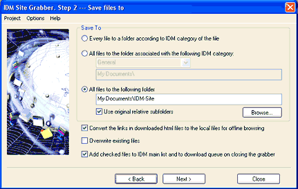

Step 2. Select where to save files to.
On the second step you need to select where to save all downloaded files.

You can save each file to a folder according to the category of the file. For example, if you have "compressed files" category defined which lists zip arj and rar file types, and it has an associated folder, for example, c:\my documents\myname\downloads\compressed, then all downloaded zip, arj and rar files will be saved to c:\my documents\myname\downloads\compressed folder.
Also you can save all downloaded files to a folder associated with a selected category. You will need to select the corresponding radio button, and choose a category. The grabber will find and show a directory below the category.
If you want to create all folders as created on the web site, you can select a directory where to save all downloaded files and check "use original relative subfolders" box.
If you are downloading a complete web site, or a part of a web site, you can check the box to convert links to local for offline browsing. This checkbox is disabled when you select a template on the first step which doesn't require saving any html pages, for example "All images from a web site" template. After downloading of all selected files or after stopping the grabber, the grabber will convert the links to downloaded files to local relative ones for every downloaded web page. Also the grabber will convert all links to the files that are not downloaded (remote files) to absolute internet links.
If "Overwrite existing files" box is not checked and the file with the same name already exists, the grabber will add underline and a number to the file name, for example index_2.html.
It's not necessary to check "Add checked files to IDM" box, the main Grabber window toolbar has a button with the same functionality to add all selected files to the main download list of Internet Download Manager. If this checkbox is checked, the grabber will add selected files to IDM automatically on closing the grabber.